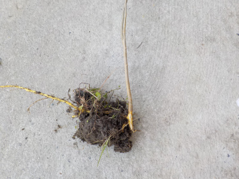
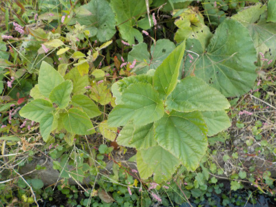
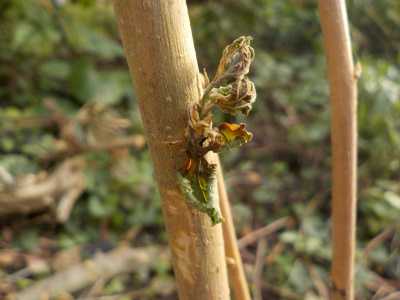
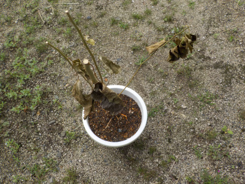
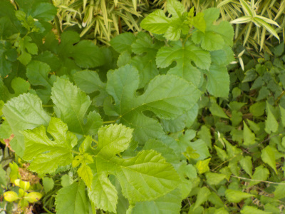
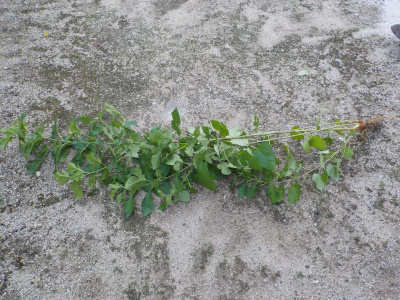
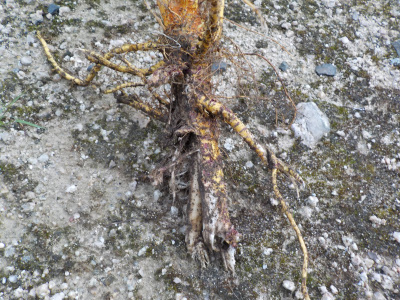
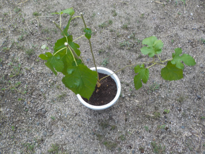
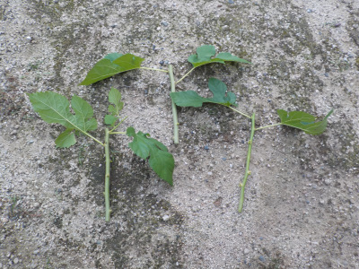

雑草の中育ってた桑を抜きました。
2023/02/05

鉢に植えて育てます。
以前に鉢に植え替えしたものは枯れてしまったので、今回は成功させたいです。でもスコップで掘る時に根っこを切ってしまったので枯れるかも。
2023/02/05

鉢に植えて育てます。
以前に鉢に植え替えしたものは枯れてしまったので、今回は成功させたいです。でもスコップで掘る時に根っこを切ってしまったので枯れるかも。
2022/10/23

また家で桑の木を見つけました。前回のものよりも小さいです。
何本も生えるってことはきっと近くに桑の木があるんでしょうね。
植物の検索アプリのPictureThisによると、前回はマグワで今回は黒実桑でした。どっちでしょうね。
冬の休眠期になったら鉢に植えようと思ってます。地植えで大きく育てても、そんなに活用することはないでしょう。
2022/10/02

引っこ抜いて鉢に植えた桑です。
一度葉を全部落として、その後小さい葉が出ました。
新芽が出たので育つんじゃないかと思っていたんですけど、新芽が萎れてしまいました。
2022/08/20

引っこ抜いてまだ5日しか経っていないのに、葉っぱが全部萎れました。
毎日雨が降ってて水分はたっぷりあるのに。
このペースだとあと数日で完全に枯れ木になりそうです。
2022/08/15

何か分からないものが生えていたんですが、花が咲けば分かるだろうと放置していました。
でも大きくなり過ぎたので、画像を検索したら「マグワ」って判定されました。

桑を育てるスペースは7ないので、引っこ抜きました。

根っこは途中で切りました。

根っこがあまりないですが、鉢に植えました。育つかどうかわ分かりません。

挿し木もしました。何か1本は成功して育つんじゃないかと思っています。
鳥が運んできた種が育ったと思うんですが、どんな桑が育つでしょうか。美味しい実が出来ればいいですが、そう都合良くはいかないでしょうね。
子供のころは桑の実って美味しいって思っていたけど、今食べたらどうなんだろう。